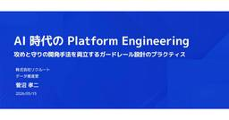

https://thinkit.co.jp/
https://thinkit.co.jp/
【Think IT】“オープンソース技術の実践活用メディア” をスローガンに、インプレスグループが運営するエンジニアのための技術解説サイト。開発の現場で役立つノウハウ記事を毎日公開しています。
フィード

Kaggleは「キャリアの再定義」に役立つ ー文系営業がKaggler会で得た、挑戦の連鎖と新しい自分 1
1
https://thinkit.co.jp/
「データサイエンス」は文系には関係ない別世界の学問と思っていた私は現在、エンタープライズ向け・AI時代のオペレーショナルプラットフォーム(データ基盤)を提供するCouchbase(カウチベース)にてシニアアカウントエグゼクティブを務めています。これまでの15年以上にわたるキャリアは一貫して法人営業の現場にあり、戦略的なビジネス提案を行う「文系のビジネスパーソン」として研鑽を積んできました。そんな私にとって、データサイエンスやKaggleという領域は、高度な数理能力を持つエンジニアが専門性を競い合う、自身の実務とは切り離された業務であり、「別世界の学問」のように感じていました。営業として「データ活用」の重要性を顧客に説くことはあっても、それはあくまで「誰か専門家がやってくれること」という前提の上での話。自分でコードを書き、モデルを構築するなど、想像すらしていなかったのです。しかし、2024年に訪れた「Kaggler会」を通した多くの仲間との出会いが、その固定観念を根底から覆すことになりました。「Kaggler会」で受けた衝撃―― 自ら学び、挑戦を楽しむ大人たちきっかけは、前職でリスキリング(学び直し)推進の事業に携わっていた際のことでした。当時の私は、企業の人材育成担当の方々と「いかにして社員の自発的な学習意欲を高めるか」という課題に向き合っていましたが、組織全体に学びを浸透させる難しさを痛感してもいました。そんな折、ご縁あってスポンサーとして「関西Kaggler会」に参加する機会を得ました*1。そこで目にしたのは、黙々と画面に向き合う孤独な技術者の集まりではなく、新しいゲームに熱中する子どものようにデータの先にある正解を求めて熱く議論し、知見を惜しみなく共有し合う大人たちの姿でした。何よりも驚かされたのは、彼らが「やらされる学習」ではなく、未知の課題に挑むプロセスそのものを心から楽しんでいることでした。リスキリングを説く立場にありながら、これほど純粋な「学びへの熱狂」を目の当たりにしたのは初めてでした。スコアが上がる喜びや、昨日まで解けなかった課題が解ける快感に突き動かされる彼らを見て、「ここには、私が探していた『学びを楽しむ大人たち』がもうたくさんいる」「私もこの輪に入り、彼らと同じ景色を見てみたい」と直感したこと。その直感的な衝動こそが、文系の私がKaggleと
19時間前

LFが欧州AI人材レポート「2026年 技術人材の現状 欧州版」を公開、AIアセット共有標準「OpenSharing」を発表、ほか
https://thinkit.co.jp/
欧州のAI人材事情を初めて本格調査ーLFが「2026年 技術人材の現状 欧州版」を公開Linux Foundation(以下、LF)は2026年6月8日、LF Research、Linux Foundation Europe、Linux Foundation Educationとの共同で「2026 State of Tech Talent Europe(2026年 技術人材の現状 欧州版)」を公開しました。LF Europeとしては初の欧州特化型技術人材レポートで、欧州の組織157社(グローバル398社中)を分析対象とし、欧州のIT人材市場においてAIがもたらす影響と課題を多角的に分析しています。【参照】2026 State of Tech Talent Europe Reporthttps://www.linuxfoundation.org/research/tech-talent-europe-20265月に公開されたグローバル版「2026 State of Tech Talent Report(日本語版)」では、AI導入の最大障壁がセキュリティの運用成熟度にあること、そしてAIは雇用を奪うのではなく、むしろ増やしていることが示されました。今回の欧州版では、欧州固有の規制環境やデジタル主権の議論を背景に、グローバルとは異なる欧州ならではの構造的課題が浮き彫りになっています。【参照】2026 State of Tech Talent Report(日本語版)https://www.linuxfoundation.org/ja-jp/research/open-source-jobs-report-2026-jpAIは欧州でも雇用創出の原動力―ただし企業規模で明暗レポートの最も重要な発見は、AIが欧州のIT分野においても純雇用の創出要因であるという点です。欧州の組織全体では2026年に＋27%、2027年に＋17%の純雇用増加効果が見込まれています(P.9 FIGURE 2)。グローバル版の＋31%と比較するとやや控えめですが、「AIが雇用を奪う」という一般的な懸念とは対照的な結果が示されました。 【出典】「2026 State of Tech Talent Europe Report」PDF p.9しかし、この成長は一様ではありません。組織規模別の分析(P.9 F
25日前
AI時代の論文投稿に潜む「見えない情報漏えい」
https://thinkit.co.jp/
はじめに「arXiv」は、研究者が論文のプレプリント(査読を受ける前の原稿)を公開する場として広く使われています。機械学習、物理学、数学、コンピュータサイエンスなどの分野では、査読(同じ分野の研究者による事前評価)を受ける前の研究成果をarXivで共有する流れが定着しています。今回紹介する論文でも、機械学習分野では、査読付き出版よりも先にプレプリントを公開する動きが広がっていると説明されています。この流れは、生成AIの普及によってさらに目立つようになっています。大規模言語モデル、AIエージェント、マルチモーダルAI、AIセーフティ、AIセキュリティに関する研究では、arXivで先に成果を公開し、その後に査読付き会議やジャーナルへ進むケースがあります。研究の公開速度が上がること自体は、知見の共有を早めます。一方で、投稿前に十分な確認を行わないまま、LaTeXソース、図表、補助ファイル、実験ログ、共有リンクが公開されるリスクも上がります。LaTeXは論文や技術文書の執筆で使われる組版システムです。本文、図表、参考文献、数式などをソースファイルとして記述し、それをPDFに変換して使います。arXivの特徴の1つは、PDFだけでなく、論文を生成するためのLaTeXソースファイルも公開される点です。これは、記法の再利用、研究の再現性、長期的な保守性といった観点では利点があります。一方で、ソースファイルにはPDFには現れない情報が残ることがあります。今回紹介する論文「Hidden Secrets in the arXiv: Discovering, Analyzing, and Preventing Unintentional Information Disclosure in Source Files of Scientific Preprints」は、arXivで公開されている論文ソースに、どの程度の「見えない情報」が含まれているのかを大規模に調査した研究です。論文が扱う「見えない情報」とは、PDF本文には表示されないものの、ソースファイルを取得すれば読めてしまう情報を指します。例えば、LaTeXコメント、不要なファイル、画像やPDFに埋め込まれたメタデータ(ファイル自体に付随する作成者、作成日時、使用ソフトなどの付帯情報)、APIキー、秘密鍵、内部文書へのリンクなどです。
19時間前
【AIと人】情報は武器か、それともノイズか 1
https://thinkit.co.jp/
はじめに本連載は、生成AIコミュニティ「IKIGAI Lab.」のメンバーが、それぞれの専門領域で培ってきた知見を持ち寄り、技術・ビジネス・ガバナンスなどの多角的な視点から最新のAI動向をひも解いていきます。前回の記事【AIに何を任せ、どこで止めるか】Loop Engineeringから考える仕事の設計では、AIが仕事を分解し、自律的に実行する「Loop Engineering」の考え方を紹介しました。しかし、どれほどAIが高度にタスクを遂行できるようになっても、最後に「この案で進めよう」と決断するのは、やはり人間です。そこで今回は、AIそのものではなく、「AIを使って意思決定する人間」に焦点を当ててみたいと思います。情報が増えれば、判断はよくなるのか？筆者がAIで作成生成AIを使えば、市場分析、競合調査、リスク評価、過去事例、必要な情報は驚くほど短時間で集まります。少しでも気になる点があれば、「別の観点でも分析して」「反対意見も挙げて」「考えられるリスクをもっと洗い出して」と追加で質問すれば、数秒後にはさらに詳しいレポートが返ってきます。「情報が増えれば、より良い判断ができる」私たちは、ごく自然にそう考えます。ところが実際には、AIに相談すればするほど選択肢が増え、どの情報も重要に見えてしまい、かえって決断できなくなった、そんな経験はないでしょうか？これは【Claudeが示す落とし穴】AIが賢くなるほど、人間の判断は怪しくなるという、AIの優秀さを前に人間が思考を放棄してしまい、AIの出す結論をうのみにしてしまうという「自動化バイアス」とは少し異なります。むしろその逆です。より良い判断をするために、AIが提示した情報を真面目に読み込み、慎重に比較しようとする。その誠実な姿勢そのものが、結果として判断を難しくしてしまう場合があるのです。実は、この現象を考える上で非常に示唆に富む研究があります。2020年、米スティーブンス工科大学のMin Zheng氏らは、「追加された因果情報が、人間の意思決定にどのような影響を与えるのか」を調べました。その結果は、「情報は多いほど良い」という私たちの直感とは、少し異なるものでした。今回はこの研究を手がかりに、生成AIが私たちの情報収集だけではなく、意思決定そのものを取り巻く環境をどのように変えつつあるのかを考えます。そして、AI時代
2日前

Box AIエージェントセキュリティ——企業コンテンツへの野放しアクセスにガバナンスを
https://thinkit.co.jp/
📌 このニュース、3行で押さえるなら 📌BoxがAIエージェント向けの新たなセキュリティ・ガバナンス機能群を発表。エージェント向けガードレール、プロンプトインジェクション検出、MCPガードレール、分類に基づくアクセスポリシー、エージェント行動監視、監査証跡、ヒューマンインザループ制御の7機能を提供BoxネイティブのAIエージェントだけでなく、Claude・ChatGPT・GeminiなどサードパーティのAIエージェントにも同様のセキュリティコントロールを拡張できる。コンテンツが存在するプラットフォーム上で直接保護を提供する点が特徴Boxが2026年に実施した調査では、ITリーダーの90%がセキュリティ・規制・信頼性に関する懸念をAIエージェントへの企業コンテンツアクセスを許可する際の最大の障壁として挙げており、今回の機能はその課題に直接対応するもの📝 Think IT編集部の見解 📝今回の発表が示す本質は「AIエージェントをどこで止めるか」という問いへの実装上の答えだ。AIエージェントが企業システムに深く組み込まれると、「誰が何のファイルにアクセスしたか」という従来のIDベースのアクセス管理では対応しきれない問題が生じる。エージェントはユーザーの権限を借りて動作するため、意図しないコンテンツへのアクセス、外部への情報漏洩、プロンプトインジェクションによる誤動作といったリスクが、ユーザーの目に見えない形で発生しうる。Boxのアプローチが興味深いのは「コンテンツが存在するその場所で保護する」という設計思想だ。AIゲートウェイやAPIレイヤーで制御する方法もあるが、それではBoxの外から接続するサードパーティエージェントへの対応が難しい。コンテンツプラットフォーム側が制御の起点となることで、エージェントの種類や接続方法に依存しない一貫したガバナンスが実現できる。特にMCPガードレールの追加は注目に値する。MCP(Model Context Protocol)対応ツールからBoxに接続するエージェントに対して、許可する操作をスコープ単位で制御できるようになったことは、MCPが企業システム統合の標準として普及しつつある現在、実務上の意義が大きい。一方、今回の機能はEnterprise Advancedプランのユーザー向けに今後数か月以内に順次展開される予定であり、現時...
2日前
「BIND 9.20.26」リリース ─ キャッシュポイズニングなど9件の脆弱性を修正
https://thinkit.co.jp/
開発版「BIND 9.21.24」も同時公開、なお9.18系列はEOL Internet Systems Consortium(ISC)は7月22日(現地時間)、DNSサーバBINDのポイントリリースとなる「BIND 9.20.26/9.21.24」を発表した。 「BIND 9.20.26」は、現行安定版・Extended Support Version(ESV)に位置付けられるBIND 9.20系列のメンテナンスリリース。DNSキャッシュポイズニング、DNSSEC検証の回避、サービス拒否(DoS)などにつながる9件の脆弱性が修正されている。 「BIND 9.20.26/9.21.24」で修正された脆弱性は次の通り。〇不正なNSEC3レコードを受け入れ、偽のNXDOMAIN応答を生成される可能性がある問題(CVE-2026-10723、Medium)〇不正なDNSKEYレコードによってアサーションエラーが発生する問題(CVE-2026-10822、Medium)〇ワイルドカードCNAMEを利用してResponse Policy Zone(RPZ)のポリシーを回避できる問題(CVE-2026-11331、High)〇細工されたDNSSEC否定応答によって過剰な検証処理が発生し、CPU資源を消費する問題(CVE-2026-11605、High)〇継続的な攻撃によってDNSキャッシュのメモリを枯渇させられる問題(CVE-2026-11622、High)〇不正なRRSIGおよびワイルドカード応答によってDNSキャッシュポイズニングが発生する可能性がある問題(CVE-2026-11721、High)〇特定のCNAMEおよびDNAME応答によってnamedが異常終了する問題(CVE-2026-12617、High、BIND 9.20.26のみ)〇不正なNSEC／NSEC3応答によってnamedが異常終了する問題(CVE-2026-13204、High)〇ゾーン外を指すNSECレコードによってDNSSEC検証を回避できる問題(CVE-2026-13321、High)など。 このうち「CVE-2026-13321」は、CVSS基本値が8.6と評価されている。攻撃者が管理するゾーンから、ゾーン外を指すNSECの次所有者名を送信することで、不正なレコードをDNSSEC検証リゾルバのキャ
2日前
「Backstage」でユーザーからのフィードバックを収集する仕組みを作ってみよう
https://thinkit.co.jp/
はじめに本連載も4回目となり、コンテナオーケストレーション、APIゲートウェイ、認証認可、ゴールデンパステンプレートとプラットフォームの機能を拡充してきました。新しい機能を追加していくことも重要ですが、これまで追加した機能を振り返り、改善にいかすことも大切です。そこで今回は、これまで作った機能でユーザー(プロダクトチーム)がどのような体験をしているのか、ユーザーは満足しているのかを把握するため、ユーザーからのフィードバックを収集する仕組みを追加していきます。ユーザーからのフィードバックをプラットフォームに反映させるプロセスは「プラットフォームエンジニアリングの成熟度モデル」でも重要な要素の1つとして挙げられています。今回、フィードバックの仕組みに利用するのは、Backstageの「entity-feedback」プラグインです。これにより、ユーザーは各機能に対するフィードバックをプラットフォームチームへ伝えられるようになります。また、entity-feedbackプラグインでフィードバックを行えるのは認証済みユーザーのみです。そのため、まずはBackstageをKeycloakに連携させ、ユーザー認証を行えるようにしていきます。なお、今回利用したソースコードはこちらに格納しています。Backstageのセットアップ第3回で構築したBackstageはバージョンの関係でKeycloakとの連携が少し複雑になってしまうため、最新版のBackstageを新たにセットアップして、そこにKeycloak連携とフィードバック機能の追加を行っていきます。 詳しい説明は第3回の解説を参照してください。まずは、以下のコマンドを実行して、Backstageの初期セットアップを行います。npx @backstage/create-app@0.8.2以下のようにBackstageアプリケーションの名前(ディレクトリ名)を聞かれるため、任意の名前を入力します。 今回は、backstage-appと入力しました。 Keycloak連携BackstageをKeycloakに連携させるための手順を説明します。 今回、ユーザーのログインだけでなく、ユーザーの管理もKeycloakで行いたいので、以下の2つの設定を行います。Keycloakでユーザーがログインできるようにする設定Keycloakのユー
3日前

【クラウドネイティブ会議】AI時代のPlatform Engineeringはどう変わるのか――開発速度と品質を両立するGuardrails設計
https://thinkit.co.jp/
AI Codingの普及により、ソフトウェア開発では、変更を生み出す主体が人間からAgentへと広がりつつある。開発速度が高まる一方で、人間の認知範囲を超える変更をどう安全に受け止めるかが問われている。クラウドネイティブ会議で、株式会社リクルートのソフトウェアエンジニアである菅沼孝二氏は「AI時代のPlatform Engineering 攻めと守りの開発手法を両立するガードレール設計のプラクティス」と題し、AI時代のPlatform Engineeringに求められる役割を語った。Platform Engineeringは、利用者の生産性をスケールさせる仕組み登壇したリクルート ソフトウェアエンジニアの菅沼孝二氏はまず、Platform Engineeringの役割を整理した。菅沼氏にとってPlatformとは、「利用者の生産性をスケールさせる仕組み」である。ここでいう生産性は、個々の利用者の創出力と、組織横断の規模の掛け算で捉えられる。そのための中核となるアプローチが、認知負荷の削減、標準化と自動化、そして境界設計である。利用者が価値創出に集中できる状態をつくり、反復作業や手戻りを排除し、何を見せ、何を見せないかを設計する。これがPlatform Engineeringの基本的な役割だという。リクルートでは、この10年にわたり、データアプリケーション開発向けのInternal Developer Platformを運営してきた。利用者数の増加に対してプラットフォームエンジニアの工数がボトルネックになる一方、利用者側でも、認知負荷によって個々の創出力が制約されていた。これに対し、同社が中心に据えたのがGolden Pathsであった。開発体験の改善やセルフサービス化により、利用者の自律性を高め、プラットフォームエンジニアへの依存を減らす。同時に、抽象化レイヤーや標準化によって認知負荷を下げ、利用者が本来の開発に集中できる状態をつくってきた。「人間主体時代の生産性律速は、Golden Pathsを中心とした取り組みで一定程度解決してきたと考えています」と菅沼氏は語った。 人間が変更主体だった時代には、Golden Pathsによって生産性を高めることができていた。しかしAI Codingの登場により、変更を起こす主体にAgentが加わりつつある。AI時代には、変更生
3日前
「VirtualBox 7.2.14」リリース ─ Linux 7.2への初期対応を追加
https://thinkit.co.jp/
Windows 11のSecure Boot DBX更新時に発生する再起動問題などを修正 Oracleは7月21日(現地時間)、仮想化ソフトウェア「VirtualBox 7.2.14」をリリースした。 「VirtualBox」は、ホスト上に仮想マシンを作成し、その上で別のOSを実行することができるソフトウェア。Windows版、Linux版、 BSD版などが用意されており、幅広いゲストOSに対応している。個人利用または評価目的の場合は無償で利用可能であり、またソースコードがOSE版としてGPLの下で公開されている。 「VirtualBox 7.2.14」では、LinuxホストにおけるLinuxカーネル7.2への初期対応や、更新されたRHEL 9.8／9.9カーネルへの対応などのほか、安定性の向上などのメンテナンスが行われている。 「VirtualBox 7.2.14」のハイライトは次の通り。〇Windowsインストーラで、Windowsのサービスインフラストラクチャを介したVisual C++ランタイムの検出に対応〇WindowsホストにおけるUnicode形式のクリップボード処理を修正〇Windows Hyper-Vを仮想化エンジンとして使用する際、XSAVE機能を持たないCPUでXCR0レジスタを参照、設定しないよう修正〇LinuxホストでLinuxカーネル7.2への初期対応を追加〇Linuxゲストで更新されたRHEL 9.8およびRHEL 9.9カーネルへの対応を修正〇Secure Boot DBXエントリの更新時にWindows 11でバグチェックと再起動が発生する可能性のある問題を修正〇BIOSのビルド要件を簡素化し、すべてのビルドでNASM 2.16以降を利用可能に など。 「VirtualBox 7.2.14」は、Webサイトから、Windows、macOS、Linux、Oracle Solaris向けのパッケージが入手できる。(川原 龍人/びぎねっと)[関連リンク]リリースアナウンスChangelog配布ディレクトリこの記事の筆者 kawahara kawaharaのプロフィールを見る
3日前
「NetworkManager 1.58.0」リリース ─ CLATとGENEVEインターフェースに対応
https://thinkit.co.jp/
6GHz帯Wi-FiやnmtuiでのQRコード表示に対応、CVE-2026-10805を修正 Network Manager Projectは7月20日(現地時間)、ネットワーク設定ツール「NetworkManager 1.58.0」をリリースした。 「NetworkManager」は、Linuxにおけるネットワーク関連の設定管理を行うツール。有線・無線LAN、ブリッジ、3G、Bluetoothなどのネットワークをサポートしており、設定、移行、自動接続などの機能を合わせ持っている。GNOME、KDEのほか、組み込み機器などに対応しており、dbusを経由して対応アプリケーションを構築することができる。 「NetworkManager 1.58.0」はメジャーアップデートリリースとなっており、CLAT(464XLAT)やGENEVEインターフェースへの対応、Wi-Fi機能の強化、nmtuiの改善などのほか、セキュリティ修正も施されている。 「NetworkManager 1.58.0」のハイライトは次の通り。〇BPFを利用したCLAT(464XLAT)のサポート〇GENEVEインターフェースのサポート〇Wi-Fi接続設定のbandプロパティで6GHz帯を指定可能に〇iwdバックエンドでWi-Fiの省電力設定に対応〇インターフェース単位で接続性チェックを無効化する「check-connectivity」オプションを追加〇ゲートウェイおよび指定したIPアドレスへの到達確認に内部ping実装を利用〇管理対象／管理対象外の状態を再起動後も保持可能に〇DHCPv6で委譲されたIPv6プレフィックスを共有接続で利用可能に〇nmtuiからWi-Fi接続情報をQRコードで表示可能に〇nmtuiにWi-Fi再スキャンボタンとVim形式の検索機能を追加〇nmcliのWi-Fiスキャン結果に周波数帯を表示〇不正なMUD URLによるローカル権限昇格の脆弱性を修正（CVE-2026-10805）〇不正なDHCPv4パケットによって境界外読み取りとクラッシュが発生する問題を修正〇非公開接続で802.1X証明書および秘密鍵へのユーザのアクセス権を検証〇dhclientをDHCPバックエンドとして利用する機能を削除〇Wireless Extensionsを非推奨とし、デフォルトで無効化〇開発版とリリ
3日前
「IPFire 2.29 - Core Update 203」リリース ─ DNSリゾルバをKnot Resolverへ移行
https://thinkit.co.jp/
DNS over TLSやDNS Firewall、6GHz帯Wi-Fiに対応 オープンソースのファイアウォール向けLinuxディストリビューション「IPFire 2.23 Core Update 139」が7月20日(現地時間)、リリースされた。 「IPFire」は、ファイアウォール向けのLinuxディストリビューション。ルータもしくはプロキシとして利用することで、ファイアウォールを構築することができる。様々な攻撃からの防御機能を備えており、各種ログの取得も可能。 「IPFire 2.29 - Core Update 203」は、DNSリゾルバをUnboundからKnot Resolverへ置き換える大規模なアップデート。DNS over TLSによる上流DNSへの暗号化転送やDNS Firewall、SafeSearchなどの機能が導入された。このほか、Wi-Fiアクセスポイントの6GHz帯対応、セキュリティ修正、各種パッケージの更新などが施されている。 「IPFire 2.29 - Core Update 203」の主な変更点は次の通り。〇DNSリゾルバをUnboundからKnot Resolverへ移行〇DNS over TLSによる上流DNSへの暗号化転送に対応〇マルウェアや広告などのドメインを遮断するDNS Firewallを導入〇DNS FirewallのゾーンデータをTLS経由で取得する「zone-sync」を導入〇主要な検索エンジンやYouTubeにSafeSearchを適用可能に〇条件付きDNS転送とローカルDNSレコードに対応〇DHCPリースのホスト名をDNSで解決するKnot Resolver用モジュールを導入〇DNSキャッシュを再起動後も保持する永続キャッシュに対応〇複数のKnot Resolverワーカープロセス間でキャッシュと状態を共有〇Wi-Fiアクセスポイントで6GHz帯をサポート〇40MHzのチャネル幅と手動選択したチャネルを組み合わせた際にアクセスポイントを起動できない問題を修正〇Amazon EC2のInstance Metadata Service Version 2（IMDSv2）に対応〇一部のIntelプロセッサ向けマイクロコードを更新（INTEL-SA-01420）〇Webインターフェースで非ASCII文字を含む翻訳が
4日前
FreeBSD、ベースシステムからdialogを削除 ─ 最後のGPLソフトウェアを除去
https://thinkit.co.jp/
dpv、libdpv、libfigparも退役、ベースシステムからGPLソフトウェアを一掃 FreeBSD Projectは7月(現地時間)、ベースシステムから「dialog」を削除するコミットを行った。 Linuxディストリビューションの多くがGNU由来のユーザーランドを組み合わせているのに対し、FreeBSDは歴史的にBSDライセンスを中心とするベースシステムを構築してきた。 今回削除されたdialogは、端末上でメニュー、チェックリスト、メッセージボックス、入力フォームなどのテキストユーザーインターフェースを表示するためのツール。dialogはFreeBSDベースシステムに残っていた最後のGPLソフトウェアであり、これに合わせてdpv、libdpv、libfigparもベースシステムから削除された。これによって、FreeBSDのベースシステムからGPLソフトウェアが完全に姿を消したことになる。 FreeBSDは、サードパーティアプリケーションをPorts Collectionやpkgで提供する一方、ベースシステムについてはOS本体として一体的に管理している。今回の変更は、FreeBSDベースシステムからGPL由来の最後のコンポーネントを取り除くものであり、FreeBSDの「ベースシステムにGPLソフトウェアを利用しない」という方針に沿った措置となる。 なお、この変更はFreeBSD srcリポジトリへのコミットであり、既存のリリース済みFreeBSD環境に直ちに影響するものではない。また、GPLソフトウェアを利用しないという方針はベースシステムに対するものであり、Ports Collectionやpkgで提供されるサードパーティソフトウェアでは引き続きGPLソフトウェアが採用されている。 (川原 龍人/びぎねっと)[関連リンク]FreeBSDレビュー D55424: Retire dialogFreeBSDレビュー D55425: Retire the GNU subtreeこの記事の筆者 kawahara kawaharaのプロフィールを見る
4日前
「Tera Term」のTTSSH2に複数の脆弱性、「Tera Term 5.6.2」で修正
https://thinkit.co.jp/
メモリ内容の漏えい・Tera Termの予期しない動作の危険、アップデートを ターミナルエミュレータ「Tera Term」の最新版、「Tera Term 5.6.2」が7月15日、リリースされた。 Tera Term は、Windowsで動作する国産のターミナルエミュレータ。Telnet、SSH 1、SSH 2に対応しており、文字コードもUTF-8などが利用できる。同ソフトウェアは1994年に寺西高氏によって初版が公開され、その後オープンソース化され複数の開発者により開発・改良が進められている。 「Tera Term 5.6.2」では、SSHプラグイン「TTSSH2」に発見された複数の脆弱性が修正されている。Tera Termで提供されるSSH接続機能は「TTSSH2」を介して提供されるため、Tera Termを用いたSSHを利用しているユーザはアップデートを施すことが推奨される。 今回修正された脆弱性は次の通り。〇符号無し整数から符号付き整数への変換エラー（CWE-196、CVE-2026-58317）〇長さパラメータの不整合に対する不適切な処理（CWE-130、CVE-2026-60060） これらの脆弱性は、悪用されるとメモリ境界外読み取りによって、隣接するメモリ領域のデータが受信パケットの一部として解釈され、サーバへ送信される危険がある。また、隣接するメモリ領域への境界外書き込みも発生する可能性がある。ただし、書き込まれる内容は攻撃者が任意に制御できるものではなく、一時的な「\0」の書き込みと元の値の書き戻しに限定される。 影響を受けるのは「TTSSH2 1.00 alpha1」から「TTSSH2 3.6.1」まで。同プラグインを同梱するTera Termでは、「UTF-8 TeraTerm Pro 2.05」から「Tera Term 5.6.1」までが対象となる。Tera Term 4系については修正版が提供される予定はなく、5系の最新版への移行が推奨される。 「Tera Term」は、GitHubから入手できる。(川原 龍人/びぎねっと)[関連リンク]リリースページ(Tera Term 5.6.2)メモリ境界外アクセスの脆弱性(teratermproject.github.io)JVN#65294474：Tera TermのTTSSH2プラグインにおける
4日前

AIコーディング時代のボトルネックに挑む ――GitLab 19.2の新機能を読み解く
https://thinkit.co.jp/
📌 このニュース、3行で押さえるなら 📌AIが生成するコード量の急増に対応するため、GitLab 19.2では脆弱な依存関係を自動修正する「Dependency Scanning Auto-Remediation」がパブリックベータとして提供開始されたパターンマッチングでは検出できないビジネスロジック上の欠陥をマージリクエストごとに検出する「Security Review Flow」もパブリックベータで登場したターミナルからGitLab Duo Agent Platformのエージェントをフル活用できる「GitLab Duo CLI」が正式リリースとなり、GitLab.com・Self-Managed・Dedicated全環境で利用可能になった📝 Think IT編集部の見解 📝AIコーディング支援ツールの普及によってコード生成速度が飛躍的に向上した結果、レビュー・セキュリティ検証・依存関係管理という「生成の後工程」がボトルネックになりつつある。GitLab 19.2はその課題に正面から対応したリリースと見ることができる。特に注目すべきはDependency Scanning Auto-Remediationだ。Mavenエコシステムの調査では最新リリースの約63%が推移的依存関係を通じて脆弱性を含むという指摘があり、依存関係の管理負担は開発現場で深刻化している。脆弱なパッケージが検出されると修正済みのマージリクエストを自動生成し、アップグレードでビルドが壊れた場合もエージェントが同一マージリクエスト内で修正を繰り返すという設計は、開発者への負荷を最小化しながらセキュリティ対応を進められる点で実用的だ。Security Review Flowについては、静的スキャナが苦手とする認可漏れや競合状態、ビジネスロジックの欠陥をマージリクエスト単位で検出できる点が従来のアプローチと異なる。ただしフローが独自に承認することはなく、最終判断は常に人間が行う設計になっており、自動化と人的管理のバランスを取った実装といえる。GitLab Duo CLIの正式リリースは、エージェント型AIの活用範囲をエディタからターミナルへ拡張するものだ。パイプラインの失敗調査やCI/CDの整理など、開発者がコマンドラインで行う運用的な作業にもエージェントを活用できるようになる点は、特にSR...
4日前
Apple Vision Pro用モーションコントローラーの技術仕様公開、Blender 5.2 LTS公開 ほか
https://thinkit.co.jp/
今週のXR領域の最新動向をお届けします。開発環境の分野では、Appleが空間コンピュータ「Apple Vision Pro」向けにサードパーティ製モーションコントローラーの技術仕様を公開したほか、統合3Dソフトウェアの最新版「Blender 5.2 LTS」がリリースされ、VRでのロケーションスカウティング機能が追加されました。市場動向としては、Counterpoint Researchによるインテリジェントアイウェア市場の調査で、ディスプレイを持たないスマートグラスの出荷台数が大幅に増加したことが報告されています。さらに研究事例として、MESONと博報堂DYホールディングスが行った、イマーシブビデオの撮影距離が体験者の心理に与える影響についての検証結果を紹介していきます。Apple Vision Pro用モーションコントローラーの技術仕様を開発者向けに公開Appleは、空間コンピュータ「Apple Vision Pro」向けのサードパーティ製モーションコントローラーに関する技術仕様を開発者に向けて公開しました。この詳細は、Apple製品向け外部アクセサリー開発用ガイドラインの最新版に、新セクション「Spatial Accessories」として74ページにわたり追加されています。この中には、トラッキング対応アクセサリーに必要なハードウェア構成や、搭載するLEDの基準、基板のレイアウト例など詳細な情報が記されています。発売当初、Vision Proはモーションコントローラーへの対応を見送っていましたが、今回の仕様公開によりサードパーティによるコントローラーの開発が公式にサポートされることになります。WWDC2026でも具体的な設計例が示されており、今後の多様な入力デバイスの登場が期待されます。本ニュースの詳細はこちら：Apple Vision Pro用モーションコントローラーの技術仕様を開発者向けに公開https://www.moguravr.com/apple-vision-pro-third-party-controller-specifications/Blender 5.2 LTS公開、VRでの撮影地点確認機能を追加Blender Foundationは、2年間の長期サポートを提供する統合3Dソフトウェアの最新版「Blender 5.2 LTS」を公開しまし
4日前
「Clonezilla Live 3.3.3」リリース ─ リバース接続によるネットワーククローンに対応
https://thinkit.co.jp/
Linuxカーネル7.0.14を採用、ネットワーク設定用TUIも追加 Clonezilla.orgは7月15日(現地時間)、ディスクイメージング／クローニング用ライブシステム「Clonezilla Live 3.3.3」をリリースした。 「Clonezilla」は、ディスクやパーティションのイメージ作成、複製、復元などを行うためのオープンソースソフトウェア。対応するファイルシステムでは、使用されているブロックのみをコピーすることで、イメージのサイズや処理時間を抑えることができる。「Clonezilla Live」は、CD/DVDやUSBメモリなどから起動し、単体のコンピュータのバックアップや復元に利用できるライブシステムとなる。 「Clonezilla Live 3.3.3」は、2026年7月5日時点のDebian Sidリポジトリをベースとした安定版。リバース接続によるネットワーククローンへの対応、新しいユーティリティの追加、ネットワーク関連機能の改善、複数の不具合修正などが行われている。 「Clonezilla Live 3.3.3」のハイライトは次の通り。〇ベースシステムを2026年7月5日時点のDebian Sidへ更新〇Linuxカーネルを7.0.14へ更新〇ライブシステムにnetwork-manager-tuiパッケージを追加〇ネットブートクライアントでsupp_boot_param_ocs_live_extra変数を利用可能に〇ocs-ontheflyにリバース接続によるネットワーククローン機能を追加〇cnvt-ocsiso-qcow2およびocs-check-initrd-moduleを追加〇既存のパーティションを持つ複数のディスクを処理できるようocs-ontheflyを改善〇ocs-live-hook-functionsのdisable_sudo_use_pty処理を改善〇Memtest86+を8.10へ更新〇ntfscloneによるパーティション保存中にCtrl+Cを押した際、誤った結果となる問題を修正〇remote-destおよびremote-sourceモードで「ask_user」がディスク名として誤認され、処理が終了する問題を修正など。 「Clonezilla Live 3.3.3-15」は、Webサイトからダウンロードできる。 (川原
4日前
「Weston 16.0.0リリース」 ─ HDRとカラー管理を改善
https://thinkit.co.jp/
Vulkan renderer、DRM backend、BACKGROUND_COLOR CRTC propertyなどに対応 freedesktop.orgは7月14日(現地時間)、Waylandコンポジタ「Weston 16.0.0」をリリースした。 「Weston」は、freedesktopのWayland Projectが開発に当たっているWaylandコンポジタ。LinuxのDRM/KMS、evdev、GBMなどを利用して動作し、Wayland環境の実装、検証、組み込み用途、デスクトップ環境開発などで利用されている。 「Weston 16.0.0」はメジャーアップデートリリースとなっており、HDRおよびカラー管理関連の改善、DRM backendの拡張、Vulkan rendererの修正、Linux 7.1で導入されたBACKGROUND_COLOR CRTC propertyへの対応などが行われている。 「Weston 16.0.0」のハイライトは次の通り。〇HDR表示およびカラー管理関連の改善を実施〇DRM backendで「color format」DRM connector propertyに対応〇DRM backendにcolor pipelines supportを追加〇グレースケール出力向けのcolor effectを追加〇カラー変換関連の処理を改善〇Linux 7.1で導入されたBACKGROUND_COLOR CRTC propertyに対応〇単色背景をハードウェア側へオフロード可能に〇Vulkan rendererとDRM backendのexplicit synchronizationに対応〇Vulkan rendererで非軸揃え回転をサポート〇Vulkan rendererの複数の不具合を修正〇GPU recovery、VNC backendのDMA-BUF対応などを改善など。 「Weston 16.0.0」は、Webサイトから入手できる。 (川原 龍人/びぎねっと)[関連リンク]リリースアナウンスRelease News(Wayland)この記事の筆者 kawahara kawaharaのプロフィールを見る
4日前
「Perl 5.44.0」リリース ─ 名前付き引数を実験的に導入
https://thinkit.co.jp/
Unicode 17.0対応、3件のCVE修正など、5.40系列はEOLに Perl.orgは7月15日(現地時間)、プログラミング言語「Perl 5.44.0」をリリースした。 「Perl」は、テキスト処理、システム管理、Webアプリケーション、ネットワーク処理などで広く利用されてきた汎用プログラミング言語であり、1994年にリリースされた「Perl 5系列」の最新リリース。なお、「Perl 6系列」は現在「Raku」として提供されている。 「Perl 5.44.0」は、Perl 5.44系列の最初のメジャーリリース。「Perl 5.44.0」のハイライトは次の通り。〇サブルーチンシグネチャで名前付き引数を実験的に利用可能に〇複数変数foreachで参照エイリアスを利用可能に〇正規表現の/xx修飾子に関する動作を拡張〇Unicode 17.0に対応〇内部PRNGのシード取得でgetentropy()を利用〇Perl_study_chunkのバッファオーバーフローを修正（CVE-2026-8376）〇S_measure_structのバッファオーバーフローを修正（CVE-2026-57432）〇正規表現trie最適化の16ビットフィールドオーバーフローを修正（CVE-2026-13221）〇Unicode規則を識別子名および正規表現グループ名へより厳密に適用〇整数演算、定数文字列キーによるハッシュ生成、シグネチャ処理の性能を改善〇Archive::Tar、HTTP::Tiny、IO::Compress、Socket、Storableなど同梱モジュールを更新など。 今回のリリースでは、サブルーチンシグネチャにおける名前付き引数が実験的に導入された。これによって、従来の位置による引数指定に加え、名前と値のペアとして引数を渡せるようになった。たとえば、通常の位置引数に加えて「:alpha」「:beta」のような名前付き引数をシグネチャに含め、呼び出し側で「alpha => 789」のように指定できる。 また、「Perl 5.44.0」の公開に伴い、「Perl 5.40」系列のサポートは終了し、EOL(End Of Life)となっている。同系列のユーザは新系列への移行が推奨される。 「Perl 5.44.0」は、Webサイトから入手できる。 (川原 龍人/びぎねっと)[関
7日前
「Wayland 1.26.0」リリース ─ ポインタ位置通知のwarpイベントを追加
https://thinkit.co.jp/
global_removeの競合対策、WAYLAND_DEBUGの時刻表示改善も freedesktop.orgは7月16日(現地時間)、ディスプレイサーバプロトコル「Wayland 1.26.0」をリリースした。 「Wayland」は、X Window Systemを置き換えることを目的として開発されたディスプレイサーバプロトコル・Cライブラリ。アプリケーションとディスプレイサーバの間で、ウィンドウ表示、入力、バッファ管理などに関する通信を行うための仕組みを提供する。 「Wayland 1.26.0」では、ポインタ位置の更新を通知するwl_pointer.warpイベント、global_removeイベントをめぐる競合状態への対策、ソケット管理API、デバッグ出力の改善などが行われている。 「Wayland 1.26.0」のハイライトは次の通り。〇wl_pointer.warpイベントを追加〇ユーザ操作によるmotionイベントがない場合でも、新しいポインタ位置を通知可能に〇ウィンドウの移動、リサイズ、フルスクリーン化などに伴うポインタ座標のずれに対応〇wl_fixes.ack_global_removeリクエストを追加〇global_removeイベント周辺の競合状態への対策を実施〇wl_display_remove_socket_fd()を追加〇wl_display_add_socket_fd()で追加したソケットの削除に対応〇WAYLAND_DEBUGの時刻表示を改善など。 今回のリリースでは、wl_pointer.warpイベントが追加されている。従来は、ポインタが実際に動いた場合にはmotionイベントで位置情報を受け取れるが、ウィンドウの移動、リサイズ、フルスクリーン化などによりサーフェス上のローカル座標が変化した場合、クライアントが正しいポインタ位置を得られないことがあった。 wl_pointer.warpイベントにより、コンポジタはクライアントに新しいポインタ位置を通知できるようになる。 「Wayland 1.26.0」は、Webサイトから入手できる。 (川原 龍人/びぎねっと)[関連リンク]リリースアナウンスリリース(freedesktop)この記事の筆者 kawahara kawaharaのプロフィールを見る
8日前

MySQLのGIS機能を使って県や市町村の面積を調べてみよう
https://thinkit.co.jp/
はじめに前回まで、国土数値情報から取得した千葉県の行政区域データ、学校データ、鉄道データをMySQLに登録してきました。今回からは、登録済みのこれらのデータを使って、様々なデータ操作を紹介していきます。今回は、Polygonの面積を求める ST_Area() 関数を紹介します。ST_Area()関数ST_Area()は、Polygonの面積を返す関数です。引数に「SRID 6668」のような地理座標系のデータを与えた場合、その戻り値の単位は平方メートルになります。前回までに千葉県の行政区域データを登録しているので、このデータを使ってST_Area()関数の動作や活用を見ていきましょう。まずは柏市の面積を求めてみます。ST_Area()関数に、各自治体の形を示すPolygonデータが格納されているSHAPE列を与えています。1,000,000で割っているのは、見やすさのための平方キロメートルへの変換です。mysql> SELECT OGR_FID, n03_001, n03_004, n03_007, -> ST_Area(SHAPE) / 1000000 AS area_km2 -> FROM chiba_city -> WHERE n03_004 = '柏市';+---------+-----------+---------+---------+--------------------+| OGR_FID | n03_001 | n03_004 | n03_007 | area_km2 |+---------+-----------+---------+---------+--------------------+| 681 | 千葉県 | 柏市 | 12217 | 114.74049682901403 |+---------+-----------+---------+---------+--------------------+1 row in set (0.003 sec)柏市のホームページによると同市の面積は114.74平方キロメートルなので、今回の結果である約 114.74049...とぴったり一致しました。複数のポリゴンで構成される市町村ところで、市町村によっては飛び地や離島などがある場合には、同一市町村でも複数のポリゴンで構成されているものを第19回
8日前

【バックエンドエンジニア編】要件定義のやり直しを防ぐ! 開発を遅延させる「外部システム接続」の落とし穴と3つの回避策 1
https://thinkit.co.jp/
はじめに「エンジニア」とひと口に言っても、ソフトウェア、フロントエンド、サーバーなど、その役割によって現場で直面するトラブルはさまざまです。本連載では、PMO(Project Management Office)として多くの現場を経験してきた甲州が、それぞれのエンジニアが抱える課題の回避策を深掘りしていきます。一般的に「バックエンド」という用語は、インフラ系(サーバー、ネットワーク、データベース)を含めて使われることも多いですが、今回ではWebエンジニアにおけるバックエンド(アプリケーション領域)に限定し、インフラエンジニアについてはまた別の回で紹介します。バックエンドで処理する内容は、アプリケーションやシステムによって大きく異なり、プロジェクトによってそのカバー範囲はさまざまです。サーバーサイドのロジックやシステムのアルゴリズム部分を構築するのがメインとなりますが、それと同じくらい重要になるのが「外部システムから受け取ったデータをどう処理するか」「処理したデータを外部システムにどのように渡すか」という領域です。大規模なプロジェクトになれば「インターフェースチーム」という専門組織が組成されますが、中小規模のプロジェクトではバックエンドチームが外部との接続部分まで一括して担当することがほとんどです。そこで今回は、この外部システムとの接続やシステム間の連携といった「インターフェース部分」に焦点を当て、よくある失敗事例とそれを未然に防ぐ回避術を紹介します。失敗事例1：接続先ベンダーへの「依頼内容」を詳細に合意していなかった外部接続先に別ベンダーが入っており、発注企業を経由してインターフェース部分のカスタマイズを行う必要があるプロジェクトでの話です。接続先ベンダーと協議を開始し、打ち合わせを何回か重ね、互いに何をすべきかは理解し合って詳細内容への落とし込みも完了していました。ところが、それから1か月ほど経ち、進捗確認のために外部接続先ベンダーへ「その後の状況はいかがでしょうか？」と連絡したときに問題が発覚します。「その後、正式な発注の依頼をいただいておりませんので、まだ作業には着手しておりません」という驚きの回答が返ってきたのです。私たちのプロジェクト側では、既に作業依頼は完了しており、先方で改修作業が進んでいるものと思い込んでいました。しかし会議の議事録を振り返ってみると
8日前
「FreeRDP 3.30.0」リリース ─ rdstls、Audin、rdpsnd、SDLクリップボードの境界チェック強化など
https://thinkit.co.jp/
深刻なサーバ側の問題修正も FreeRDP.comは7月16日(現地時間)、Remote Desktop Protocol(RDP)のオープンソース実装「FreeRDP 3.30.0」をリリースした。 「FreeRDP」は、MicrosoftのRemote Desktop Protocol（RDP）を実装したオープンソースソフトウェア。RDPクライアントとしてWindowsなどのリモートデスクトップへ接続できるほか、ライブラリやサーバ側機能も提供している。Apache Licenseで公開されている。 「FreeRDP 3.30.0」のハイライトは次の通り。〇深刻なサーバ側の問題を修正〇ログオン情報関連の処理を更新〇WebSocket関連の回帰を修正〇SDLクライアントのクリップボード処理と境界チェックを改善〇rdstlsのバージョン処理、状態確認、境界チェックを改善〇drdynvcチャネルのcreate request送信失敗時の参照解除処理を修正〇Audinチャネルのパラメータチェックを強化〇rdpsndチャネルの境界チェックを強化〇pcap関連コードを整理など。 「FreeRDP 3.30.0」は、Webサイトからダウンロードできる。(川原 龍人/びぎねっと)[関連リンク]リリースアナウンスリリース(GitHub)この記事の筆者 kawahara kawaharaのプロフィールを見る
8日前
「C/C++」の「RayLib」でコンソールゲーム「Color」を開発してみよう
https://thinkit.co.jp/
はじめにこの連載では、さまざまなプログラミング言語やライブラリで同じゲームを開発することで、容易にそのプログラミング言語に入門します。第8回の今回はプログラミング言語「C/C++」を使って、次のURLのようなColorゲームを作ります。こちらからアセットをダウンロードしておいてください。コンソールアプリはデスクトップアプリではありますが、昔で言うMS-DOSに当たるターミナルから起動するアプリです。ColorゲームについてColorゲームの内容は第1回でも解説した通り、ゲームを開始したら、赤緑青の色ブロックをクリックします。すると背景色にその色が混ぜられるので、どんどんクリックして真っ白な背景にしていこうというゲームです。プログラミング言語についてプログラミング言語「C/C++」はベル研究所が開発した、アプリやカーネルなど低レベルな(より深い層でという意味で)処理速度が要求される場面で使われる言語です。機械寄りのC言語にオブジェクト指向を加えたのがC++言語で、大規模開発で威力を発揮するのが特徴です。RayLibについて「RayLib」はプログラミング言語C/C++で2Dグラフィックスを扱うゲームなどのコンソールアプリを開発できるライブラリです。シンプルに関数をまとめてくれているので、C/C++プログラミング入門用に非常に向いています。※はっきりとは分からないのですが、コメントアウトなどで全角文字を書くとバグがあるようです。画面が真っ黒になったらアンドゥしてバグを探してみてください。開発のために必要となる環境の準備今回必要となる、無料版の「Visual Studio 2026」(以下、VS2026)を準備します。次のURLからVisual StudioインストーラーをダウンロードしてVS2026の「C++によるデスクトップ開発」をインストールしてください。また、Windows以外にもmacOSやLinuxでも開発できますが、それらの開発環境のセットアップ方法は次で説明する「raylib-quickstart」の「README.md」を参考にしてください。プロジェクトを作成しようGitHubから「raylib-quickstart-main」をダウンロードし、解凍して「build-VisualStudio2026.bat」を実行するとプロジェクトが作成されます。VS2
10日前
焦りは禁物？「特化」の前に「汎用」を。エクサウィザーズが語る東海製造業における生成AI成功の秘訣
https://thinkit.co.jp/
本連載「AI CRUNCH」は「生成AIを活用している専門家が注目する『すごい企業』を調査し、その秘密を分かりやすく発信する」をコンセプトに掲げています。今回、私たちが強い関心を持ってスポットライトを当てるのが「東海エリアの製造業」です。この地域は日本のモノづくりを牽引する絶対的な中心地であり、自動車産業を筆頭に強固で緻密なサプライチェーンを築き上げています。この独自のネットワークを持つ東海エリアでAI活用が「面」として定着すれば、日本の産業全体の競争力を劇的に底上げする起爆剤になります。今回は、そんな東海エリアの製造業を中心にAI活用の強力な支援を行う株式会社エクサウィザーズの原田氏と鵜飼氏にインタビューを実施。現場のリアルな声と、成功するためのセオリーについて伺いました。明暗を分ける「2つのアプローチ」：成功企業と停滞企業の違い製造業での生成AI導入において、企業はどのような課題に直面しているのでしょうか。この点について伺うと、鵜飼氏からは「多くの企業が『自社の独自データを使った高度な特化型AIを作りたい』『すぐに劇的な業務削減のインパクトを出したい』と焦ってしまっている」という実態が語られました。日本のモノづくりは投資に対してシビアにROI（費用対効果）を求めるため、その結果として「意欲のある一部の人や専門部署だけにアカウントを渡す」という限定的な配備が起きがちだと言います。これに対し原田氏も、「そのアプローチだと使う人と使わない人の分断を生み、組織全体でのインパクトがどうしても小さくなってしまう」と警鐘を鳴らします。早く成果を出そうとする焦りが、逆に活用を停滞させてしまう。お2人のお話から見えてきた、「うまく進んでいる企業」と「進んでいない企業」の決定的な違いを比較してみましょう。比較項目 AI活用が進んでいない企業（停滞） AI活用がうまく進んでいる企業（成功） 導入の目的 すぐに劇的な業務削減・コストカットを実現したい まずは組織全体でAIを使いこなす「土台（リテラシー）」を作りたい 対象者 意欲のある一部の社員や、特定の専門部署に「限定配備」 全社員がアクセスできる環境を整え、汎用業務から触れさせる 時間軸 短期的なROI（費用対効果）をシビアに求める 「最初の1年」はユースケースの検証期間と割り切る アプローチ いきなり自社固有の高度な「業務特化型A
9日前
SUSE、インフラのレジリエンスとオープンソースAIで日本のDXを加速——ベンダーロックインからの脱却を支援
https://thinkit.co.jp/
📌 このニュース、3行で押さえるなら 📌SUSEソフトウエアソリューションズジャパンが「SUSE Summit 2026 Tokyo」を2026年7月7日に開催。「Shape Your Resilient Future」をテーマに、ベンダーロックインを排したオープンなIT基盤によるデジタルレジリエンスと日本のDX加速を訴求SUSEの2026年グローバル調査「Navigating Digital Resilience 2026」(英語)では企業の98%がデジタル主権を優先課題と位置づける一方、具体的取り組みを実施しているのは52%にとどまることが判明。ITリーダーの94%がオープンソースをデジタルレジリエンスの実現に不可欠と回答エンタープライズLinux・Kubernetes・エッジ・AIインフラを通じて、データセンターからマルチクラウド・エッジまでプロプライエタリなクラウドの制約を受けない柔軟なIT基盤の構築を支援📝 Think IT編集部の見解 📝今回の発表で注目すべきは「デジタル主権(Digital Sovereignty)」というキーワードだ。デジタル主権とは、自社のデータ・システム・IT意思決定を特定のベンダーに依存せず自律的にコントロールできる状態を指す。欧州ではGDPRや各国のデータ保護法制が進んだことで、特定クラウドベンダーへのデータ集中を避ける動きが加速しており、日本でも経済安全保障の文脈からデータの自国管理が議論されるようになっている。SUSEの調査が示す「98%の企業がデジタル主権を優先課題と認識しながら、52%しか具体的取り組みを進めていない」というギャップは、日本のエンタープライズIT現場でも実感と重なる読者が多いのではないだろうか。特定クラウドベンダーのマネージドサービスへの依存が深まるほど、将来の移行コストや価格交渉力が失われる構造的な問題だ。SUSEが提唱するアプローチは、Kubernetesやオープンソースのコンテナ基盤によって特定ベンダーに縛られない可搬性を確保しながら、AIワークロードをオンプレミス・プライベートクラウド・パブリッククラウドの任意の場所で動かすというものだ。Think ITが注力するSRE・インフラエンジニア層にとって、AIを乗せるインフラをどの層に置くかという設計判断は今まさに直面しているテーマでもある。...
9日前
「COSMIC Epoch 1.3.0」リリース ─ フロステッドガラス表示に対応
https://thinkit.co.jp/
GPU監視、外部モニタ、Bluetooth、ネットワーク関連の修正も System76は7月14日（現地時間）、デスクトップ環境「COSMIC Epoch 1.3.0」をリリースした。 「COSMIC」は、Pop!_OS向けに開発されているRust製のデスクトップ環境。Waylandを前提とした設計やタイル型ウィンドウ管理などを特徴としており、従来のGNOMEベースから独立した新しいデスクトップ環境として開発が進められている。 「COSMIC Epoch 1.3.0」では、フロステッドガラス表示への対応が大きな変更点となっている。フロステッドガラスは、半透明すりガラス風の表示効果で、COSMIC Settingsから設定できる。 「COSMIC Epoch 1.3.0」のハイライトは次の通り。〇COSMIC Settingsの外観設定からフロステッドガラスの調整が可能に〇Bluetoothアプレットで既知のデバイスを表示〇ネットワーク関連処理をNetworkManagerバックエンドからnmrsへ移行〇入力ソース関連で新しいWaylandプロトコルを利用〇AVIF画像対応でlibdav1dを利用〇外部モニタ接続時にノートPC画面がベンダーロゴで止まる問題を修正〇複数GPU環境でのテクスチャ破損を修正〇NVIDIA GPUのサスペンド許可とGPU関連処理を改善〇AMD／Intel GPUの消費電力、GPU電力、VRAM容量表示に対応〇Intel GPUのメモリ使用量取得に対応〇パネルやドックの表示スタイル保持オプションを追加〇端末のマウスホイールスクロールやフォーカス関連の不具合を修正など。 「COSMIC Epoch 1.3.0」はGitHubから入手できる。 (川原 龍人/びぎねっと)[関連リンク]リリースアナウンス(GitHub)COSMIC(System76)この記事の筆者 kawahara kawaharaのプロフィールを見る
9日前
「HAMi」でKubernetes上のGPUメモリ分離の仕組みを理解し、共有を試してみよう
https://thinkit.co.jp/
はじめにスリーシェイクのSreake事業部に所属する李(LinkedIn)です。Kubernetesの標準的なGPUスケジューリングでは、GPUは整数単位で割り当てられ、1枚のGPUは1つのPodに占有されます。そのGPUがほとんど使われていなくても他のPodは確保できずPending状態で待機します。わずかなVRAM(Video RAM)しか使わない推論ワークロードでは、GPUの大半がアイドル状態となり、利用率が上がらずコスト効率が悪化しがちです。この課題を解決するのが「HAMi」(Heterogeneous AI Computing Virtualization Middleware)です。KubernetesでGPUを複数のコンテナで共有できるようにするオープンソースプラットフォームです。HAMiが提供するGPU共有は、「VRAMのリソース分離」と「GPUコアのデバイス共有(time-Slicing方式)」の2種類です。本記事では主に前者の「VRAMリソース分離」に注目し、その仕組みと動作をEKS上で確認します。 https://project-hami.io/docs/key-features/device-sharingインストール周りの注意点事前準備本記事では、EKS環境において以下のスペックで検証を行います。GPU Instance Type : g4dn.xlarge、NVIDIA T4 ×1OS : Amazon Linux 2023.11Kernel : 6.18.30-61.116.amzn2023.x86_64Kubernetes : v1.36.1-eks-3385e9bContainer Runtime: containerd 2.2.3HAMiの公式ドキュメントでは、NVIDIAをcontainerdのデフォルトランタイムに設定するよう案内されていますが、EKSのGPU AMIでは設定済みのため手動設定は不要です。実際にGPUワーカーノードに接続し、状態を確認します。# default runtime $ containerd config dump 2>/dev/null | grep 'default_runtime_name'default_runtime_name = 'nvidia'HAMiのスケジューリング対象とするGPUノ
10日前
「KDE Plasma 6.7.3」リリース ─ NVIDIA環境のトリプルバッファリングを再有効化
https://thinkit.co.jp/
KWin、Plasma Workspace、KRDP、KSystemStatsなどの不具合を修正 KDEは7月16日（現地時間）、デスクトップ環境のグラフィカルシェル「KDE Plasma 6.1.3」をリリースした。 「KDE Plasma」は、KDEが開発に当たっているLinuxおよびUNIX系OS向けのデスクトップ環境。QtとKDE Frameworksを基盤としており、カスタマイズ性、Wayland対応、統合されたシステム設定、各種ウィジェットなどを特徴としている。 「KDE Plasma 6.7.3」のハイライトは次の通り。〇KWinでNVIDIA環境のトリプルバッファリングを再有効化〇KWinでWaylandのwl_fixes v2を実装〇KWinでDPMS中に一時的に切断された画面の復帰処理を修正など〇Plasma Workspaceでカレンダーイベントプラグインのuse-after-freeを修正〇デジタル時計のタイムゾーンオフセット表示を修正〇サウンドテーマ設定でプレビュー音が再生されない問題を修正〇KSystemStatsのクラッシュ修正とIntel helperのパストラバーサル対策を実施〇KRDPで接続終了時の処理と入力イベント配送を改善〇xdg-desktop-portal-kdeでX11上のBackground portalを無効化など。 「KDE Plasma 6.7.3」は、Webサイトからダウンロードできる。 (川原 龍人/びぎねっと)[関連リンク]リリースアナウンスChangesこの記事の筆者 kawahara kawaharaのプロフィールを見る
10日前
OSSの開発者ポータル「Backstage」で「ゴールデンパス」テンプレートを作ってみよう
https://thinkit.co.jp/
はじめに前回はGateway APIを利用して最小限のプラットフォームを構築しました。今回はプラットフォームで「ゴールデンパス」を提供します。ゴールデンパスとは、Webアプリケーションを構築、スキャン、テスト、デプロイ、オブザーバビリティなど、開発者がプロジェクトの立ち上げから運用までの一連のプロセスを迅速かつ効率的に実行できるようにするためのベストプラクティスやツール、ワークフローのセットです。ゴールデンパスの重要な要素として「ゴールデンパステンプレート」(ソースコードと各種ワークフローのテンプレート)があります。開発者はテンプレートからプロジェクトを作成することで、必要な構成があらかじめ用意された状態でプロジェクトの開発を迅速に開始できます。また、今回はゴールデンパステンプレートを管理するツールとして「Backstage」を利用します。BackstageはSpotifyが開発したオープンソースの開発者ポータル(IDP: Internal Developer Portal)で、組織内のツールやサービスを統合し、開発者が効率的に作業できる環境を提供します。Backstageの機能の1つである「Software Templates」はソースコードのテンプレートを管理し、テンプレートから新しいプロジェクトを作成できる機能です。本記事では、Software Templates機能を利用して、Go言語で書かれたシンプルなWebサーバーのゴールデンパステンプレートを作成する方法を解説します。構築する構成の説明今回構築するのは、図1の赤い点線で囲った部分です。Namespace backstageにBackstageをデプロイし、GitHubと連携させます。GitHubはゴールデンパステンプレートの保管、および各プロダクトのコード保管場所として利用します。 Backstageの初期化Backstageの設定やカスタマイズはTypescriptで行います。そのため、まずはBackstageのGetting Startedに従ってBackstageアプリケーションを初期化します。BackstageはNode.js上で動作するため、事前にNode.jsをインストールしておく必要があります。今回はNode.js v24.12.0を使用して検証しています。以下のコマンドを実行して、Bac
3ヶ月前
「AWS Security Hub CSPM」で複数のセキュリティサービスを集約管理してみよう
https://thinkit.co.jp/
「AWS Security Hub CSPM」で複数のセキュリティサービスを集約管理してみようitoh2026年7月14日実践で学ぶDevOpsツールの使いこなし術シェア ポスト はてブ 優先するニュース提供元に追加 はじめに前回では、「Amazon GuardDuty」を使ってAWSアカウントの脅威を自動検知し、検出結果をSlackへ通知する仕組みを構築しました。これで、不審な挙動を検出から通知まで自動化できるようになりました。ただし、AWS環境のセキュリティ運用にはGuardDuty以外にも複数のサービスが関わります。代表的なものは以下のとおりです。脆弱性スキャン：Amazon Inspector機密データ検出：Amazon MacieIAMポリシーの過剰権限分析：IAM Access Analyzerこれらが各々独自の検出結果を出力するため、コンソールを個別に確認するのは運用負荷が高い上、重要なアラートを見落としやすくなります。そこで使うのが「AWS Security Hub CSPM」です。これは複数のセキュリティサービスの検出結果を一元集約するサービスで、業界標準ベンチマークに対する準拠度の自動評価機能も備えます。対象ベンチマークは「CIS AWS Foundations Benchmark」や「AWS Foundational Security Best Practices」です。本記事ではSecurity Hub CSPMを有効化したうえで、EventBridge経由でCRITICAL/HIGHレベルの検出結果をSlackへ通知する仕組みを構築します。Security Hub CSPMのコントロール評価は「AWS Config」が記録したリソース構成を入力とするため、本記事では併せて有効化します。なお、2025年以降、AWSは従来「AWS Security Hub」と呼ばれてきたサービスを「AWS Security Hub CSPM」にリブランドしました。その上位には統合レイヤーとなる新サービス「AWS Security Hub」(以降、本記事では区別のため「Security Hub v2」と表記)が新設されています。本記事の中心となる基準評価機能はSecurity Hub CSPM側にあるため、本文では混同を避けるため「Security Hub CS
11日前